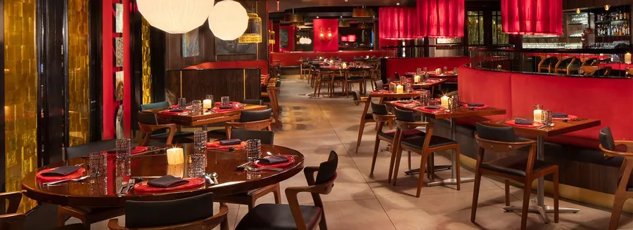

1. Echo
at The Breakers · Palm Beach
Pan-Asian · Thai · Chinese · Japanese · Korean
- Sunday: Sun 5:00–9:30 PM
- Drive: about 40–45 min from Arden, arrive about 6:45 PM
- Price: $$$$ · entrées $34–60 · 20% service charge added
- Rating: OpenTable 4.7★ (3,096)
Lantern-lit garden, red-lacquer dining room, cocktail-chic Palm Beach glam.
Why it fits you two
The most "transported" night on the list. Thai and Pan-Asian under garden lanterns on Palm Beach island, a few blocks from Worth Ave for a stroll after. A great pick for long conversation over shared plates.
What to order
Peking Duck Bao Buns / Peking DuckDon's non-fish star: hoisin, scallion, cucumber
Kalbi Wagyu FlatironBulgogi marinade, stir-fried veggies. Another great non-fish pick
Riceless Seafood Cucumber RollTuna, salmon, hamachi wrapped in cucumber. Caitlin's GF-friendly pick
Gluten-free pick
Riceless Seafood Cucumber Roll. Ask for tamari instead of soy sauce.Caitlin's drink: zero-proof drinks on the menu
Zero-proof list ($12): Lychee Spritz (lychee, white cranberry, lime), Saigon Sunset (watermelon, house infusion) or Tropical Wave. Jasmine Dragon Pearl tea to finish.Music
No live music listed. Expect a lounge soundtrack and a buzzy bar.4.7★ on OpenTable from 3,096 diners, with 4.6 food, 4.7 service and 4.5 ambience.OpenTable
Dress code is cocktail chic. Reservations recommended. 230A Sunrise Ave, a few blocks from The Breakers.
Photos: thebreakers.com